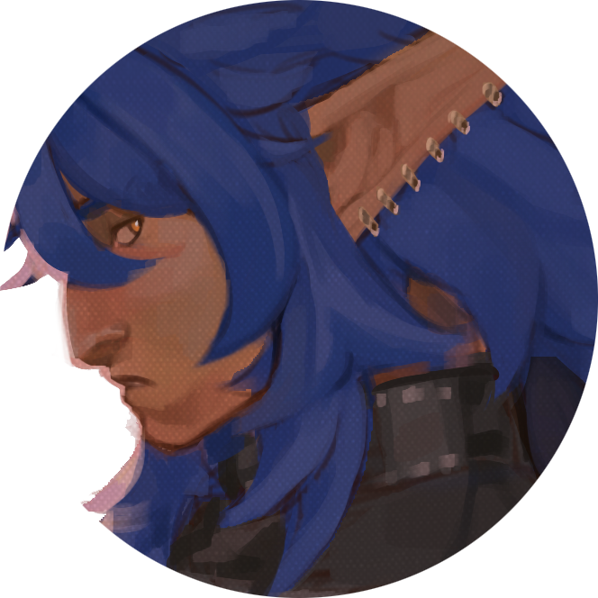
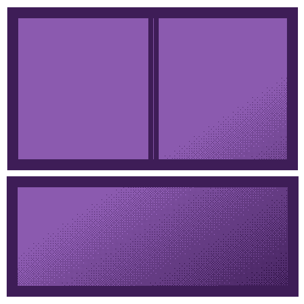

Janitor stew's Nexus Lines documentation website
Welcome to the documentation website I made to be able to stock any and all informations related to my OC's and the story pivoting around them dubbed "Nexus Lines"


Welcome to the documentation website I made to be able to stock any and all informations related to my OC's and the story pivoting around them dubbed "Nexus Lines"

